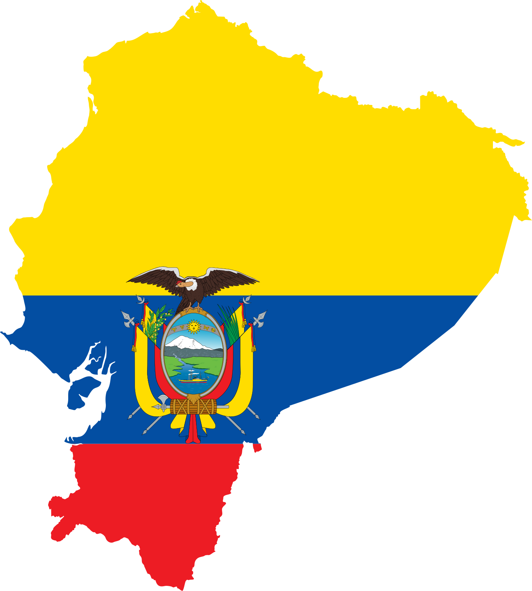
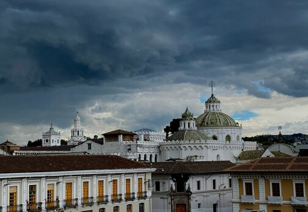
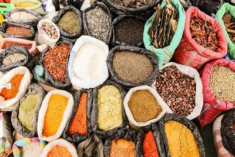
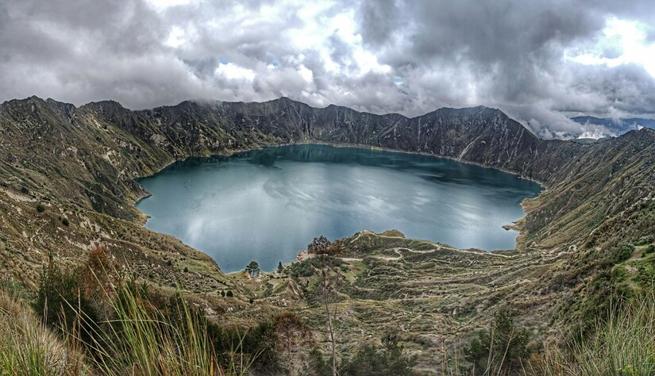
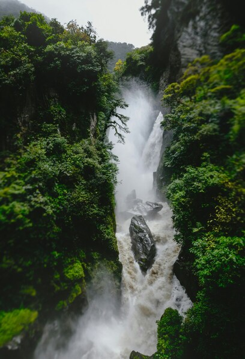
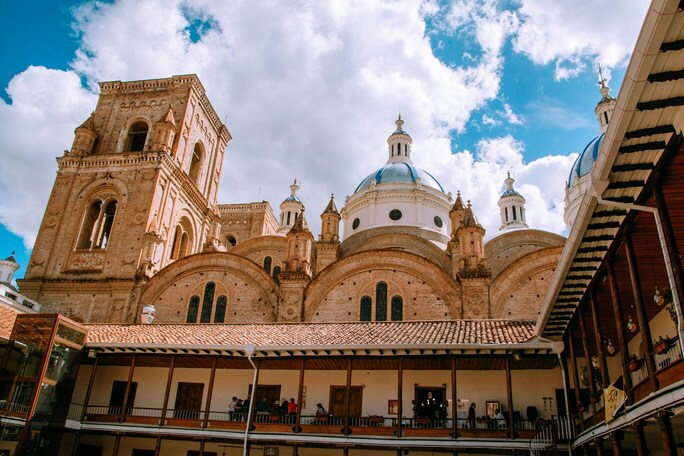

Équateur
Plongez dans une aventure extraordinaire en Équateur, un pays où les merveilles naturelles vous attendent à chaque coin de rue. Des sommets enneigés des Andes aux plages paradisiaques des Galápagos, en passant par la forêt amazonienne luxuriante et les villes coloniales chargées d'histoire, l'Équateur offre une diversité incroyable de paysages et d'expériences.
Que vous soyez un amateur de trekking en quête de défis en altitude, un passionné de vie sauvage désireux d'explorer la biodiversité exceptionnelle de la région, ou un aventurier urbain curieux de découvrir la culture vibrante du pays, l'Équateur vous promet des découvertes inoubliables. Préparez-vous à être émerveillé par la beauté naturelle, à goûter aux saveurs délicieuses de la cuisine locale et à être accueilli par la chaleur et l'hospitalité de ses habitants.
Notre guide complet vous accompagnera dans la planification de votre voyage en Équateur en vous fournissant des informations utiles sur les sites à visiter, les activités à ne pas manquer, les conseils de voyage, les formalités administratives et bien plus encore. Laissez-vous inspirer par la magie de l'Équateur et partez à la découverte de ce paradis naturel.

10 CONSEILS POUR VOYAGER EN ÉQUATEUR
- Prenez votre temps pour explorer l'Équateur. Prévoyez suffisamment de temps pour découvrir les diverses régions du pays, des sommets enneigés des Andes aux forêts tropicales de l'Amazonie.
- N'hésitez pas à sortir des sentiers battus. Évitez les circuits touristiques traditionnels et explorez plutôt les destinations moins fréquentées pour une expérience authentique.
- Respectez la nature. L'Équateur abrite une biodiversité exceptionnelle, alors veillez à minimiser votre impact sur l'environnement et à préserver la beauté naturelle du pays.
- Préparez-vous à un climat varié. En raison de sa géographie diverse, l'Équateur peut avoir des climats très différents d'une région à l'autre. Assurez-vous d'emporter des vêtements adaptés à toutes les conditions.
- Familiarisez-vous avec les transports locaux. Les bus et les taxis sont souvent les meilleurs moyens de se déplacer dans les villes et entre les régions. Renseignez-vous sur les horaires et les itinéraires à l'avance.
- Apprenez les bases de l'espagnol. Bien que de nombreux Équatoriens parlent anglais, connaître quelques mots en espagnol facilitera grandement vos interactions avec les habitants locaux.
- Explorez la cuisine équatorienne. Ne manquez pas l'occasion de goûter aux plats traditionnels comme le ceviche, la soupe de quinoa et les empanadas. Les marchés locaux sont d'excellents endroits pour découvrir la gastronomie locale.
- Participez aux festivals et aux événements culturels. L'Équateur est riche en traditions et en festivals colorés tout au long de l'année. Assistez à une fête locale pour découvrir la culture vibrante du pays.
- Respectez la culture locale. Informez-vous sur les coutumes et les traditions équatoriennes et respectez-les pendant votre séjour.
- Préparez-vous à l'altitude. Certaines régions de l'Équateur, notamment les Andes, sont en altitude élevée. Assurez-vous de vous acclimater progressivement pour éviter le mal des montagnes.
Carte d'identité
El Nariz del Diablo
La voie ferrée relie les villes de Riobamba et d'Alausí, dans la province de Chimborazo, en Équateur. Elle traverse les montagnes via Guamote jusqu’à lieu-dit de la Nariz del diablo (Narine du diable) où l’engin entame des virages avant une marche arrière extrême.
Cette ligne de chemin de fer est connue comme la plus difficile du monde. Elle fait partie d'un réseau ferroviaire historique qui traverse la cordillère des Andes, offrant aux voyageurs des vues époustouflantes sur les montagnes, les vallées et les paysages spectaculaires de la région. Même si le trajet aller ne fait que 60 km, il comprend plus de 2000 m de dénivelé.
La banane
L'Équateur est le premier exportateur mondial de bananes (31% des exports mondiaux) grâce à son sol et à son climat uniques, qui contribuent à la qualité et à la saveur de ses bananes. Les bananes équatoriennes sont très appréciées sur les marchés d'Europe, d'Asie et d'Amérique du Nord.
Contexte politique
Au cours de l'année écoulée en Équateur, plusieurs événements majeurs ont marqué la scène politique, sociale et économique du pays. Des élections, des manifestations populaires, des changements de gouvernement ainsi que des réformes économiques et sociales ont façonné le paysage national. Parallèlement, des défis persistants tels que les inégalités sociales, les tensions politiques et les crises environnementales ont continué à influencer la dynamique interne du pays, nécessitant des réponses politiques et sociales significatives pour y faire face.
Lieux à visiter
Quito
Quito, la capitale de l'Équateur, est une ville située en altitude. Son centre historique est vieux et joli. Il est protégé par l'UNESCO. On y trouve beaucoup de bâtiments anciens et des églises. La place principale, Plaza de la Independencia, est très jolie. On peut y voir la cathédrale et le palais du président. Quito a aussi une vie nocturne animée avec beaucoup de bars et de restaurants.
Otavalo et son marché
Otavalo est une ville célèbre pour son grand marché. Il se tient tous les jours et vend beaucoup de choses comme des vêtements et des bijoux. Le marché du samedi est le plus grand. On peut aussi faire de la randonnée autour de la ville et voir de beaux endroits comme la lagune Cuicocha.
La lagune de Quilotoa
La lagune de Quilotoa est un endroit très beau avec un lac au sommet d'un volcan. On peut descendre jusqu'au lac pour faire du kayak ou faire de la randonnée autour. Mais il faut faire attention à l'altitude élevée.
Baños
Baños est une ville connue pour ses sources chaudes naturelles. On peut y aller pour se détendre dans l'eau chaude. La ville est aussi célèbre pour les activités d'aventure comme le rafting et le VTT. Il y a beaucoup de belles cascades à voir aussi.
Cuenca
Cuenca est une ville historique avec beaucoup de vieux bâtiments. La vieille ville est belle avec ses rues pavées et ses églises. On peut visiter des musées et des galeries d'art. Il y a aussi de beaux endroits naturels à voir comme le parc national de Cajas.
Votre itinéraire type en Équateur
Commencez votre voyage à Quito, la capitale de l'Équateur, en explorant son magnifique centre historique classé au patrimoine mondial de l'UNESCO. Visitez la Basilique del Voto Nacional, le Palais présidentiel, la Plaza Grande et le Panecillo pour des vues panoramiques sur la ville.
Partez à l'aventure à Mindo, une petite ville nichée dans les montagnes andines et réputée pour sa biodiversité exceptionnelle. Explorez la forêt tropicale nuageuse, observez les oiseaux exotiques, faites de la tyrolienne à travers la canopée et visitez les cascades spectaculaires.
Rendez-vous à Otavalo pour découvrir l'un des marchés artisanaux les plus célèbres d'Amérique du Sud. Explorez les étals colorés remplis d'artisanat local, de textiles traditionnels, de bijoux en argent et bien plus encore, et imprégnez-vous de la culture indigène vibrante de la région.
Poursuivez votre voyage jusqu'à Baños, une ville réputée pour ses activités en plein air et ses sources thermales naturelles. Faites du rafting en eaux vives, de la randonnée jusqu'aux cascades, du vélo de montagne le long des sentiers panoramiques et détendez-vous dans les bains thermaux.
Explorez la charmante ville andine de Riobamba, entourée de magnifiques paysages montagneux. Découvrez la culture locale, visitez les marchés animés, goûtez à la délicieuse cuisine équatorienne et admirez les vues panoramiques sur les volcans environnants.
Faites une excursion jusqu'au Chimborazo, le plus haut sommet de l'Équateur et la montagne la plus proche du soleil. Randonnez à travers les paysages spectaculaires de la réserve naturelle, observez la faune sauvage des Andes et admirez les vues panoramiques depuis les hauteurs.
Explorez la belle ville coloniale de Cuenca, avec ses rues pavées, ses églises historiques et ses musées d'art fascinants. Découvrez l'architecture remarquable, visitez les ateliers d'artisans locaux, dégustez la cuisine équatorienne traditionnelle et imprégnez-vous de l'atmosphère culturelle unique de la ville.
Rendez-vous au Parc National de Cajas, une réserve naturelle préservée abritant des paysages de haute montagne spectaculaires et une biodiversité remarquable. Faites de la randonnée sur les sentiers de trekking, observez la faune sauvage, explorez les lacs d'altitude et imprégnez-vous de la beauté naturelle de la région.
Terminez votre voyage à Guayaquil, la plus grande ville portuaire de l'Équateur, située sur la côte du Pacifique. Détendez-vous sur les plages de sable doré, explorez les quartiers historiques, visitez les musées locaux et goûtez aux délices de la cuisine équatorienne dans les restaurants côtiers.
Revenez à Quito pour votre vol de retour, en emportant avec vous des souvenirs inoubliables de votre voyage en Équateur. Profitez de votre dernier jour pour faire des achats de souvenirs, déguster des plats traditionnels dans un restaurant local ou simplement vous promener dans la ville.
La partie administrative
Types de visas
| Type de visa/autorisation | Durée maximum d’un séjour | Durée de validité | Prix | Prolongation possible |
|---|---|---|---|---|
| Exemption de visa | 90 jours | - | Gratuit | Oui |
| Visa de résidence temporaire | 2 ans | 2 ans | 400 USD + 50 USD (frais dossier) | Non |
Exemption de visa
Pour entrer sur le territoire de l'Équateur, assurez-vous d'avoir un passeport biométrique valide, avec une durée de validité d'au moins 6 mois après votre retour. Si nécessaire, renouvelez-le dès que possible.
À votre arrivée à l'aéroport de Quito, passez par les services d'immigration en présentant votre passeport et en remplissant la fiche distribuée dans l'avion. Vous recevrez un tampon d'entrée vous accordant un visa de tourisme pour un séjour maximal de 90 jours. Respectez les lois locales pendant votre séjour.
Bien que rarement demandé, assurez-vous d'avoir un billet aller-retour avec une date de retour dans les 3 mois. Si vous n'avez pas de billet de retour, envisagez d'acheter un billet de bus pour un trajet hors du pays en cas de contrôle.
Prolongation d'exemption
Cela fait bientôt 3 mois que vous êtes en Équateur, votre visa touristique arrive à expiration mais que faire ?
Attention : Si vous sortez du pays, cela ne remet pas à zéro vos droits. Vous avez le droit à 90 jours par an en Équateur (année glissante à partir de votre date d’entrée et non année calendaire). Il faudra donc payer pour le prolonger, sortir du pays ne vous exemptera pas de la démarche.
Vous devez faire votre demande au bureau des visas du Servicio de Migración entre le 91e et 120e jour, visa expiré. En payant environ 136.00 USD, votre visa est valable de nouveau pour 90 jours. (131.33 USD payé à l’office des migrations et 5.00 USD à payer pour obtenir votre carte migratoire, attestant du nombre de jours écoulés depuis votre entrée sur le territoire).
Frais bancaires
Où retirer
| Banque | Frais de retrait | Limite de retrait |
|---|---|---|
| Banco del Austro | Pas de frais | Environ $400 - $500 |
| Produbanco | Pas de frais | Environ $400 - $500 |
| Banco Internacional | Pas de frais | Environ $400 - $500 |
| Autres banques | Environ $1 ou plus par transaction | Variable |
Les vaccins
Avant de vous faire vacciner, assurez-vous dans votre carnet de santé que vous n’avez pas déjà reçu des injections pour des voyages antérieurs. Vérifiez également que vous êtes à jour de vos vaccins classiques : Diphtérie, Tétanos, Poliomyélite, Coqueluche, Hépatite B, Méningite, Rougeole, Oreillons, Rubéole et Covid.
Je vous conseille fortement d'aller visiter le site de l'Institut Paster qui donne les informationsà ce sujet en temps réel par pays ce qui est exactement votre besoin.
| Maladie | Mode de transmission | Recommandations de l’Institut Pasteur pour la Bolivie | Schéma vaccinal adultes | Enfants |
|---|---|---|---|---|
| Hépatite A | Eau et nourriture | Vaccin recommandé à tous les voyageurs | 1 injection au moins 15 jours avant le départ Rappel recommandé 6 à 12 mois après la première injection (en cas d’oubli, il peut être administré jusqu’à 3 à 5 ans après la première injection) Durée de protection : au moins 10 ans |
À partir de 1 an |
| Hépatite B | Voie sexuelle et sanguine | Vaccin recommandé pour des séjours longs ou répétés | 2 injections espacées d’un mois Rappel unique 6 plus tard Un schéma accéléré comportant 3 doses rapprochées et une quatrième dose 1 an plus tard peut être utilisé, uniquement chez l’adulte. |
Obligatoire pour les nourrissons depuis 2018 |
| Rage | Animaux infectés (chiens, chauve-souris…) | Vaccin recommandé aux voyageurs qui prévoient un séjour long ou aventureux et dans des lieux isolés, surtout les jeunes enfants. Le vaccin ne dispense pas d’un traitement curatif à prendre très rapidement en cas d’exposition. Il simplifie juste le traitement. | 3 injections : la deuxième 7 jours après la première, la troisième 28 jours après la première | Dès qu’ils marchent |
| Tuberculose | Voie aérienne | Vaccin BCG recommandé aux enfants en cas de séjours fréquents ou supérieurs à un mois. Elle peut être réalisée jusqu’à l’âge de 15 ans. | 1 injection | Dès la naissance |
| Typhoïde | Eau et nourriture | Vaccin recommandé aux voyageurs en cas de séjour long ou dans de mauvaises conditions | 1 injection 15 jours avant le départ Durée de protection : 3 ans |
À partir de 2 ans |
| Fièvre jaune | Moustiques | Vaccin recommandé à tous les voyageurs qui prévoient de séjourner dans les zones considérées à risque | 1 injection 10 jours avant le départ Durée de protection : à vie (sauf certains cas particuliers) |
À partir de 9 mois (entre 6 et 9 mois dans certains cas particuliers) |
| COVID-19 | Voie aérienne et mains | Tousser ou éternuer dans son coude, éviter de se toucher le visage, respecter un mètre de distance avec les autres, se laver les mains régulièrement, saluer sans serrer la main et éviter les embrassades, porter un masque | Varie selon le type de vaccin | Données indisponibles actuellement |
Sources : Institut Pasteur, France Diplomatie, Hôpital Bichat, Vidal, MesVaccins.net, Center for Disease Control and Prevention et Fit for Travel
Nos coordonnées
Consulat général de France à Quito
Adresse : Avenida 6 de Diciembre y Juan Boussingault, Bâtiment T6 - Quito
Numéro unique de téléphone 24h/24h : (+593) 2 294 38 00 (Sauf visas)
Email : visa.quito-amba@diplomatie.gouv.fr
Site Web : Site Web du Consulat général de France à Quito
Dépôt des dossiers :
Lundi - Vendredi : 09:00-11:00 (sur rendez-vous uniquement)